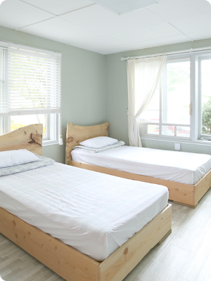
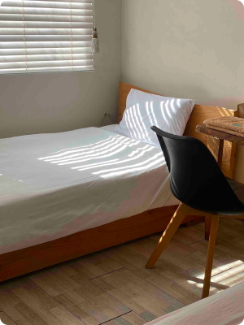
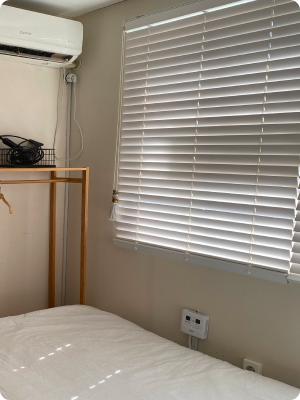
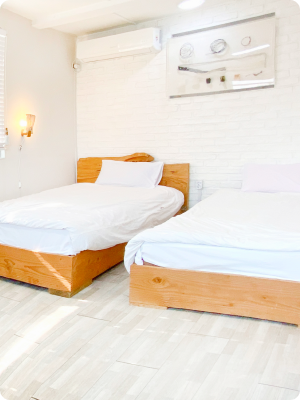
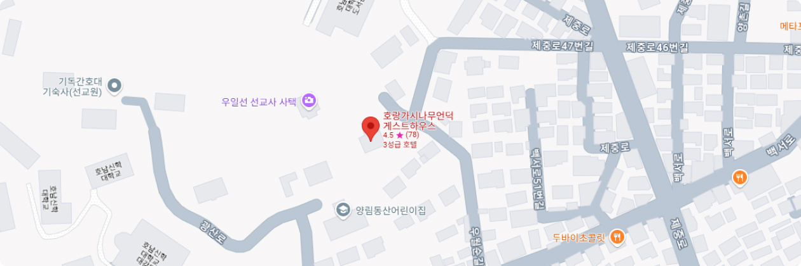

호랑가시나무언덕
게스트하우스
호랑가시나무언덕 게스트하우스는 광주의 근대역사가 살아 숨 쉬는 곳에 자리잡고 있습니다.
오랜 세월 온전하게 보존된 서구식 건축물들과 전통 한옥이 공존하고 있어 광주에서 가장 이국적인 분위기를 느낄 수 있는 곳입니다.
Horanggasinamu Hill
쾌적한 인테리어와 편하고 안락한 객실을 소개합니다.
-

포사이드방
2인용 객실(기준인원 2인)
아늑하고 포근한 느낌이 도는 방으로 옷걸이, 거울, 책상과 의자가 준비되어 있습니다. 혼자 숙박하시는데 무리가 없도록 항상 쾌적한 상태를 유지하고 있습니다.
-

우월순방
2인용 객실(기준인원 2인)
침대 두개가 나란히 붙어있어 커플이나 친구들끼리 사용하기 좋은 방입니다. 옷걸이가 붙장이 식이라 공간이 더욱 넓습니다. 넓은 창 사이로 햇볕이 들어 포근한 느낌을 줍니다.
-

배유지방
2인용 객실(기준인원 2인)
옷걸이가 붙장이식이라 공간이 더욱 넓습니다. 바로 맞은 편에 화장실이 위치하고 있어 편리합니다. 가족 단위나 친구들과 찾아 오시는 게스트분들에게 안성맞춤인 객실입니다.
-

서로득방
2인용 객실(기준인원 2인)
파스텔풍의 녹색 벽지와 넓은 창을 가지고 있는 방입니다. 햇볕이 잘 들어 따뜻하고 아늑한 분위기를 가지고 있으며 멀리 무등산이 보입니다. 책상과 거울이 있어 화장을 하기에 용이합니다.
Location
호랑가시나무언덕으로 오시는 길입니다.

-
호랑가시나무언덕 위치
광주 남구 제중로47번길 18
230-1, Yangrim-dong, Nam-Gu,
Gwangju 503-822, South Korea -
시내버스
기독병원 정류장 → 게스트하우스 (도보 10분)
양림휴먼시아2차 정류장 → 게스트하우스 (도보 30분)
-
지하철
남광주역 3번 출구 → 게스트하우스 (도보 25분)
문화전당역 1, 3번 출구 → 게스트하우스 (도보 35분)